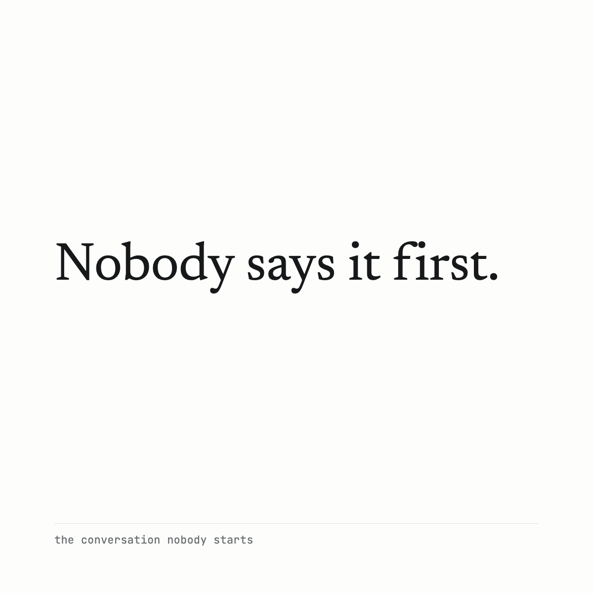

There's a conversation most owners are having with themselves, and with nobody else.
It starts around three in the morning and it's shorter than you'd think.see moreIf I'm not here Thursday, what happens to this place.
Not in a dramatic way. He isn't sick. He's just done the arithmetic everybody does eventually, and he's noticed the answer isn't written down anywhere.
He doesn't raise it with the staff. The two people the whole thing actually runs on would start looking, and he'd lose them inside a month.
He doesn't raise it with his customers. The ones with options would start taking them.
He doesn't raise it with his CPA, because his CPA does taxes, and this is not taxes.
And he doesn't raise all of it at home, because she'll either get frightened or get her hopes up, and he'd rather carry it than do that to her.
So he carries it. Two years, usually. Sometimes six.
I've sat across the table from a lot of men in this position. The thing I did not expect, early on, was how few of them were looking for advice when it finally came out.
They already knew what they wanted to do. Most of them had known for a long time.
What they wanted was one person in the room who wasn't going to be surprised by it, and wasn't going to do anything with it.
That turned out to be most of the job.
Nobody says it first. So I'll say it first.
The card, as it ships

cards/card-02.png · 1200 × 1200